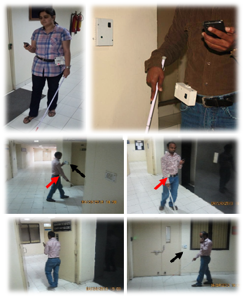
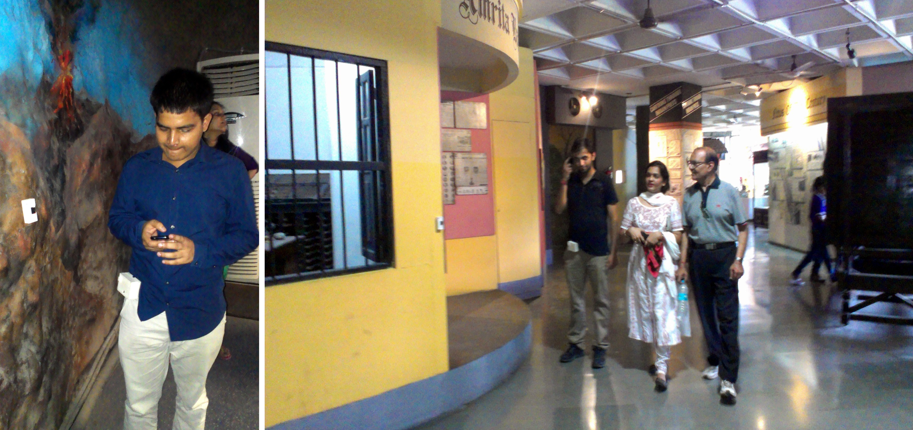

One of the common problems faced by the visually impaired people is of independent path-based mobility in an unfamiliar indoor environment. Roshni is an omnipresent active indoor wayfinding system for the visually impaired. The system downloads the floor plan of the building, locates and tracks the user inside the building, finds the shortest path and provides step-by-step direction to the destination using voice messages. The audio instructions include active guidance for impending turns and important landmarks in the path of travel, distance of each section between turns, obstacle warning instructions and position correction messages when the user gets lost. Our solution requires minimal additional building infrastructure and can be easily retrofitted onto existing buildings. Further, it is easy to use, low-cost and can be attached to the user's waist or cane. After successful field trials with about 25 visually impaired users, the system is undergoing installation at a public museum in Delhi, India.
It all started when I decided to ex plore the life beyond my textbooks. I wanted to create something creative and hands-on. Our assistive technology group was regularly visited by visually impaired people who found it hard to independently navigate to the lab from the entrance of the building. I along with my professor had a meeting with the people from DAISY Forum of India (DFI) regarding this issue. DAISY is a worldwide forum for production of reading material in the accessible format for visually impaired. We articulated the need for a low-cost, portable indoor navigation system for visually impaired. I went on to do create a basic prototype based on ultrasound sonar principle and was able to complete it in 2 months during Summer 2011.
While I was testing this with a visually impaired person in our lab, I faced a lot of issues. The obstacles in the path were sometimes too unorganized and created a blockade for the sonar which should ideally bounce off from the walls and notify the distance. That is when I realized the importance of a detailed exploratory study identifying the various localization technologies. The next 2 month were spent in reading various survey papers, testing different localization techniques and trying to figure out the best among the commercially available sensors. Based on my study, I chose to use infrared since they are cheap, small and low cost and readily available. I discussed my idea with a group of visually impaired users. They encouraged me to proceed with this and hence I came up with the basic lab prototype in the following 2 months. Specifically, using commercially available IR sensors, I made the wallv mounted modules, to transmit the IR signal and user module to receive it and send it to the mobile application via bluetooth. The mobile application provided feedback to the user about his current position and next steps to navigate to the destination. We chose to use the mobile phone which is commonly used by people. The combined system is shown in Figure 1(a). The end of the semester - Fall 2011 was spent in testing and documenting the system.
During the same time, I took an Stanford online course in Human Computer Interaction which highlighted the importance of a needfinding study. Inspired by it, I conducted the study with 5 visually impaired individuals in crowded public malls and less-occupied administrative areas of my college. The entire study starting from planning to execution lasted about 4 months and required 5 volunteers and 2 experts in various stages. I learnt a great deal about organizing a productive study, developing rapport with the users, carefully planning the experimental setup and conducting unbiased qualitative and quantitative interviews.
Meanwhile, based on the excellent feedbacks that I got from the study and with the help of people from our group, I redesigned the entire hardware system, improved the shape and dimensions of the modules (Figure 1(b)), build rapid prototyped covers, improved the ergonomics and user experience of the mobile application and finally tested it with 6 visually impaired individuals using a standardized before-and-after study during Spring 2012. The results were submitted to the TRANSED 2012 conference and we got the best paper award.
By now, I had gained knowledge of designing good hardware and software prototypes and conducting efficient user studies. The feedbacks from the study helped me design the 3rd and 4th versions of the very portable and small prototype (Figure 1(c,d)) which was pilot tested, improved and subsequently tested with 10 visually impaired individuals during the academic year 2012-13(Figure2(c)). The system was presented at ACM ASSETS 2013 and the results of the study were submitted to ACM TACCESS journal. During this time, as my final year undergraduate project, I also tested the prototypes with 7 blindfolded sighted individuals and conducted controlled experiments on line follower bots to precisely quantify the range and accuracy of the system.
At this stage, we thought that it would be worthwhile to aim for a full scale product development and testing. I put all my hardwork during the last 6 months to develop a fully customized user module of the size of a usb drive which was preferred by the users. The mobile application was improved for robustness and reliability and many features were automated for a convenient user experience. The wall modules were also customized and the transmission protocol was changed to provide a long-lasting battery. The enclosures were carefully designed to give them a product-like feel. The Ministry of Culture, Govt. of India gave us the permission to install the system at a public museum, National Science Center, New Delhi which is visited by 500,000 people annually. The application was customized for the museum and the system is currently undergoing controlled pilot trials with the public in one of the exhibitions as shown in Figure 3. Samsung contacted us to offer support for translational research and to deploy the system in other public places.
This project, which I am particularly proud of, taught me a great deal on end-cycle HCI research by applying social, cultural and psychological dimensions into technology development.

Figure 1: Development stages of Roshni modules
Figure 2: Snapshots of visually impaired people reaching their destination with different versions of Roshni. Red arrow (User module) and black arrow (wall mounted modules)
Figure 3: Pilot trials in National Science Museum, Pragati Madan, New Delhi.
Dhruv Jain, “Pilot Evaluation of a Path-Guided Indoor Navigation System for Visually Impaired in a Public Museum”, In 16th international ACM SIGACCESS conference on Computers and accessibility, 2014. (Download Pdf)
Dhruv Jain, “Path-guided indoor navigation for the visually impaired using minimal building retrofitting”, In 16th international ACM SIGACCESS conference on Computers and accessibility, 2014. (Download Pdf)
Dhruv Jain, Akhil Jain, Rohan Paul, Akhila Komarika and M. Balakrishnan, “A cellphone based path-directed indoor navigation system for persons with visual impairment”, In 15th international ACM SIGACCESS conference on Computers and accessibility, 2013. (Download Pdf)
Dhruv Jain, Prabhav Agrawal, Aman Mittal, Kartik Maheshwari and M. Balakrishnan, “Design and user study of an affordable cellphone based indoor navigation system for visually impaired”, In 13th International Conference on “Mobility and Transport for Elderly and Disabled People”, 2012. [Best Paper Award] (Download Pdf)
Batch of Sixty-Seven Award (BOSS) for the best hardcore experimental project in the department, CSE, IIT Delhi, May 2013. Dhruv Jain, Ashwini Choudhary and Himanshu Meenia were awarded a cash prize of Rs. 10,000/-.
Awarded Class of '89 Innovation Award for the best implementable student project across all departments and disciplines, IIT Delhi, April 2013. Dhruv Jain, Ashwini Choudhary and Himanshu Meenia were awarded a cash prize of Rs. 200,000/-.
Awarded best project in several nationwide competitions:
- Budding Innovators Award of the year 2013, National Research and Development Corporation, Ministry of Research and Development, Govt. of India. To be awarded in Feb 2014.
- India Innovation Initiative(i3), organized by Dept. of Science and Technology, Govt. of India. Showcased in three premier national newspapers, Nov 2012, 2013.
- 4th and 5th IBM Collaborative Academia Research Exchange (I-CARE), Oct 2012, 2013.
- Quest Ingenium(i3), organized by Quest Global Inc. (Third prize), Jun 2013. Dhruv Jain, Himanshu Meenia, Ashwini Choudhary and Akhila Komarika shared a cash prize of INR 25,000.
- Technical festival of Indian Institute of Technology, Kanpur, Mar 2013. Dhruv Jain and Himanshu Meenia were awarded a cash prize of INR 3,000.